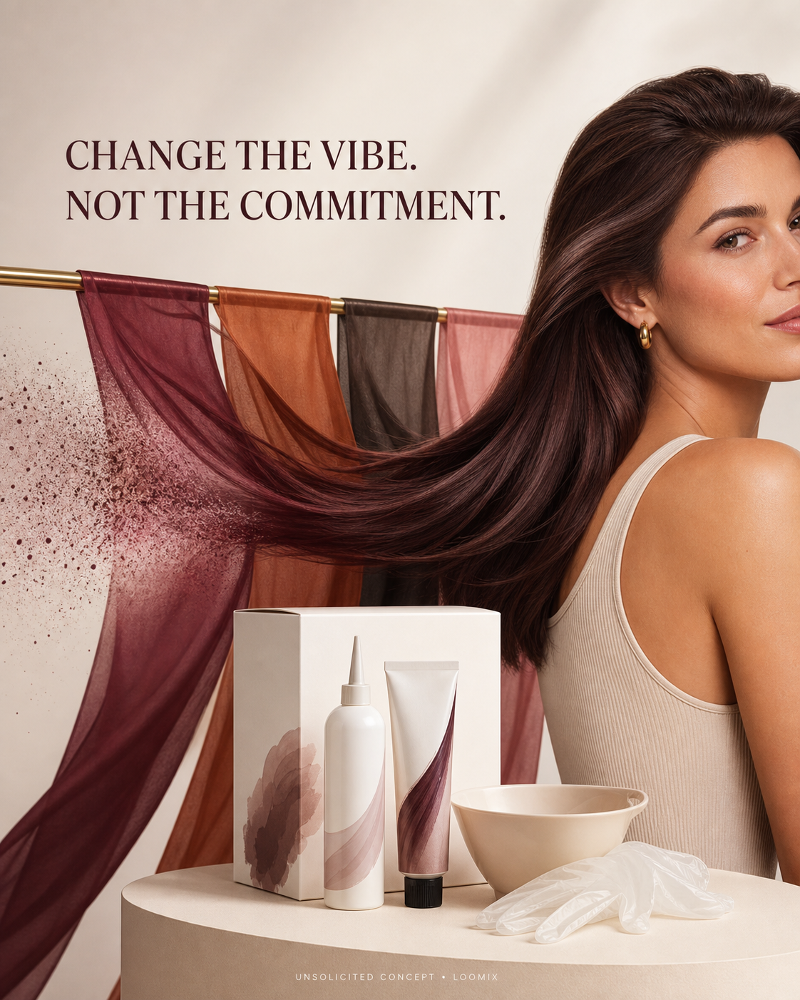

ColorWonder — Change the Vibe. Not the Commitment.
A natural hair ribbon moves behind translucent color curtains—burgundy, copper, espresso, and rose. One shade becomes dimensional and glossy, while its trailing curtain softly dissolves to signal color that gradually fades.
Create with LoomixView official product
Hook options
8-second storyboard
Open on natural hair and an ivory kit.
Slide four translucent shade curtains into frame.
Let the viewer select one color with a quick gesture.
Sweep the chosen curtain across the strand.
Reveal rich, dimensional color as the tail gently dissolves.
End on the kit, colored hair, hook, and CTA.
Caption direction
Made for rapid testing
Loomix turns one product image into a storyboard, short-video direction, captions, and ready-to-post ad copy.
This is an unsolicited creative concept made by Loomix for demonstration purposes. Loomix is not affiliated with or endorsed by Madison Reed.